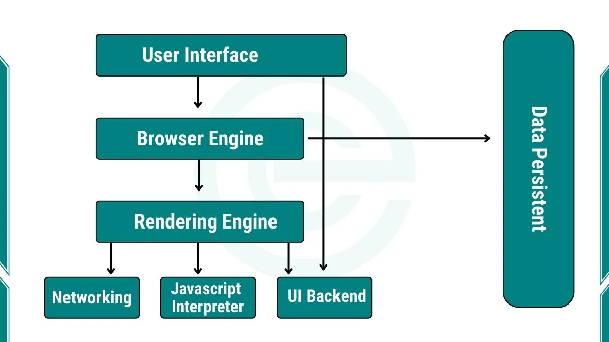

The Components of a Browser
In a web browser, several components are interconnected that work together to access, process, and then display the data of the specific web address the user has entered. Most browsers use common core subsystems even though they might differ across the various platforms and devices (Grosskurth and Godfrey, 2006). The user interface (UI) is what the user interacts with as it includes the address bar, navigation buttons, browser tabs, menus, and settings. The UI will let the user enter the URL they want to reach, go forward or backward amongst the various pages, download items, and the user can control many preferences.
The web browser engine controls the various actions a user can do by loading a page, refreshing the content of that page, and also move around the various pages depending on what the user needs. It can also handle let the user know of any errors or alerts encountered should there be any, for example, you enter a URL but mistakenly input a wrong character. The page will display an error message.
From the browsing engine it goes to the rendering engine which then deals with networking, JavaScript interpreter, XML parser, and the display backend, at least for the Safari browser according to Grosskurth and Godfrey.
Browser Components Diagram
